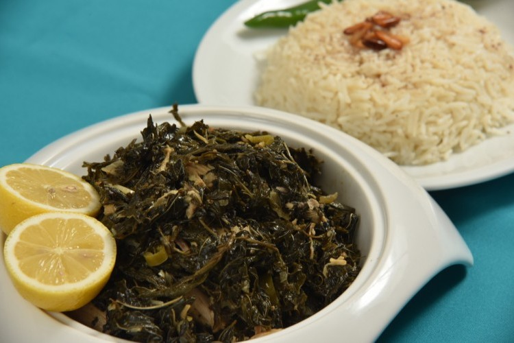

الملوخية

ما هي الملوخية ؟
الملوخيّة هي نوع من أنواع النباتات الخضراء التي تنتمي إلى النباتات الزهريّة،
وتعتبر من أشهر الأطباق التي تحضر في كلٍ من مناطق بلاد الشام كسورية، والأردن، وفلسطين،
ولبنان، ومناطق شمال القارّة الإفريقيّة كمصر، والمغرب، والجزائر، وتونس، والسودان، ولكل دولة طريقتها الخاصّة في طهيها.
المقادير
- الملوخية : 1 كيلو (ورق / مغسولة ومقلية)
- كزبرة خضراء : 2 عود
- فلفل أخضر حار : قرن
- الثوم : 3 فصوص
- مرق دجاج : 3 اكواب
- ملح : حسب الرغبة
- الزيت النباتي : 4 ملاعق كبيرة
- كزبرة يابسة : 2 ملعقة صغيرة
طريقة التحضير
- ضعي الزيت النباتي مع الثوم الشرائح وقرن الفلفل المفروم وعودان الكزبرة الخضراء في طنجرة وقلبي لدقيقتين حتى يتغير لونهم.
- أضيفي الملوخية الورق المقلية وحركيها.
- قومي بصب مرق الدجاج ورشي الملح والفلفل الأسود والكزبرة الناشفة وحركي قليلاً.
- قومي بصب مرق الدجاج ورشي الملح والفلفل الأسود والكزبرة الناشفة وحركي قليلاً.